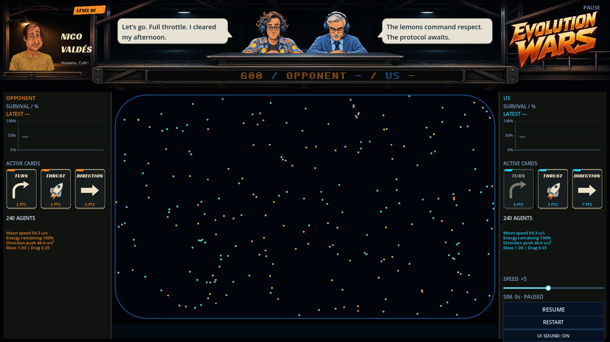
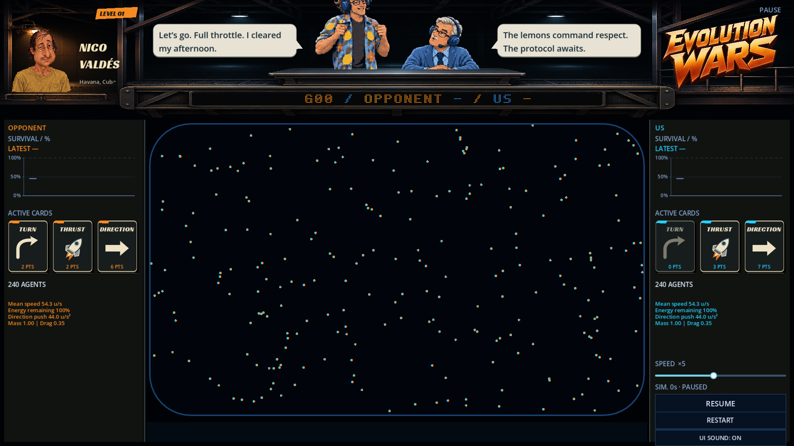
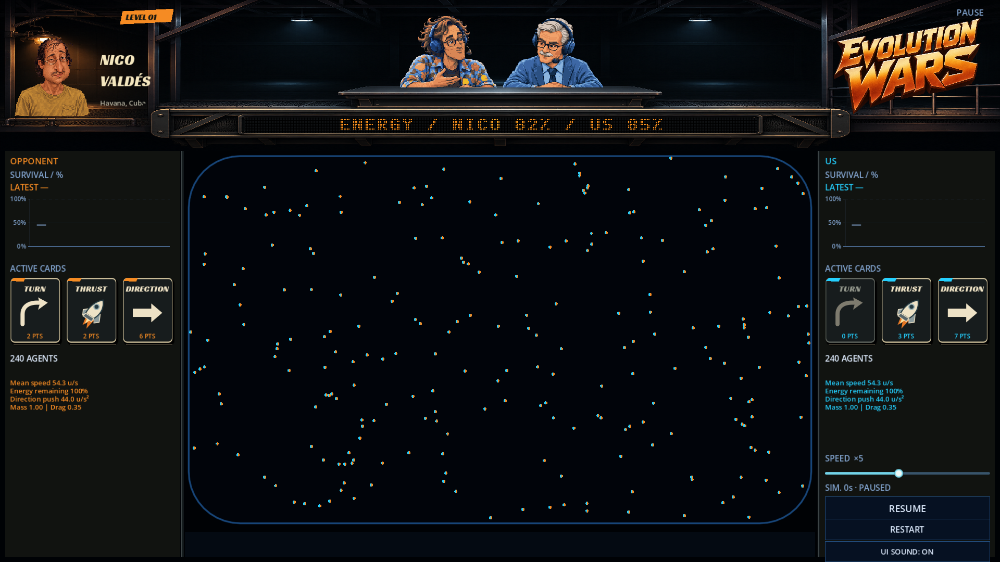
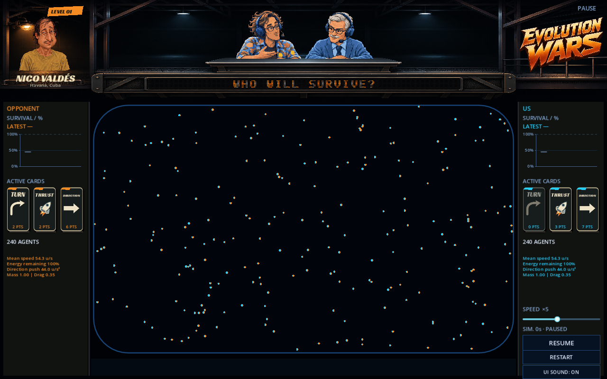
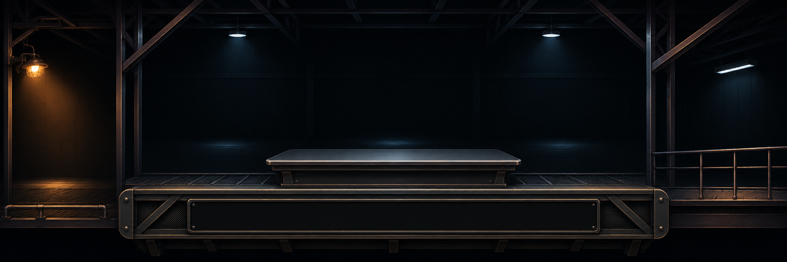
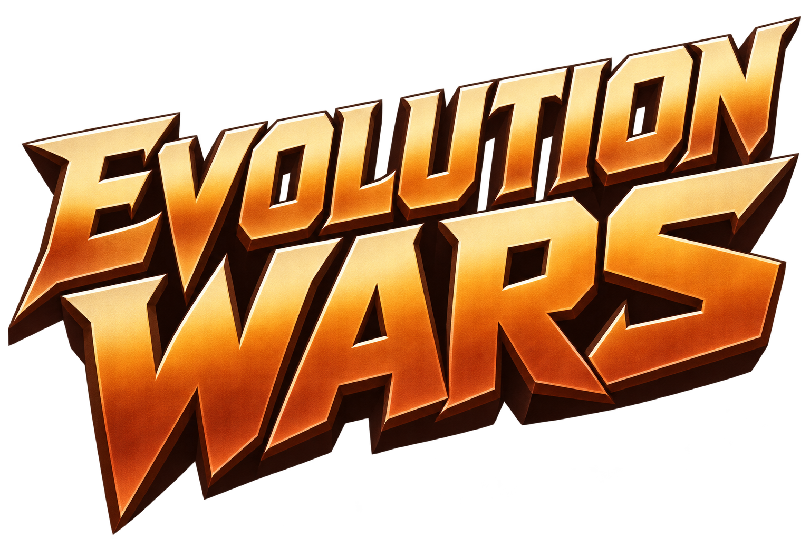

Un seul décor peint, du coin de Nico à l’enseigne. La table et le logement du panneau appartiennent à la même structure. Les bulles s’adaptent au texte, sans noms.






Version précédente · Prompts imagegen. Captures issues du jeu ; les chiffres tardifs du ruban servent à la revue graphique.